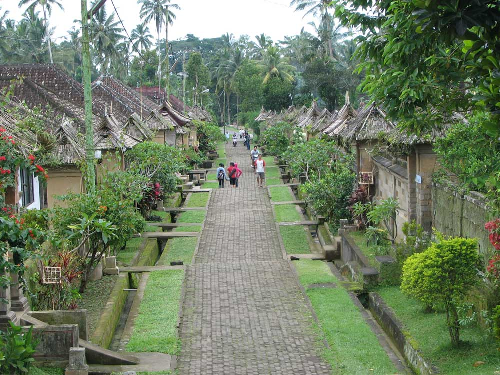

Selamat Datang
Terimakasih telah mengunjungi halaman ini.
website ini merupakan tempat destinasi keindahan alam dan kekayaan budaya Bali.
Di sini, Anda akan menemukan pengalaman wisata yang tak terlupakan,
mulai dari pemandangan alam yang memesona hingga kegiatan budaya yang memikat hati.
Next
Wisata

Penglipuran
Penglipuran adalah salah satu desa adat dari Kabupaten Bangli,
Provinsi Bali, Indonesia. Desa ini terkenal sebagai salah satu destinasi wisata di Bali
karena masyarakatnya yang masih menjalankan dan melestarikan budaya tradisional Bali
dalam kehidupan mereka sehari-hari. Arsitektur bangunan dan pengolahan lahan
masih mengikuti konsep Tri Hita Karana, filosofi masyarakat Bali mengenai
keseimbangan hubungan antara Tuhan, manusia, dan lingkungannya.
Mereka berhasil membangun pariwisata yang menguntungkan seluruh masyarakatnya
tanpa menghilangkan budaya dan tradisi mereka.
 Taman Burung Bali
Taman Burung Bali
Taman Burung Bali adalah tempat wisata yang telah menjadi
Pusat Unggulan bagi pengembangbiakan Burung Cendrawasih dan Jalak Bali.
Ada banyak burung yang berkembang biak di taman ini sepanjang tahun.
Taman ini telah ditata untuk menciptakan habitat alami.
Dengan menggabungkan beragam koleksi botani,
taman ini memiliki 52 spesies palem, pohon buah hutan langka, sikas, bambu, dan kaktus.
Tiga danau di taman ini menjadi rumah bagi berbagai spesies unggas air.
Ada 60 kandang burung dengan habitat untuk menampung koleksi tersebut.